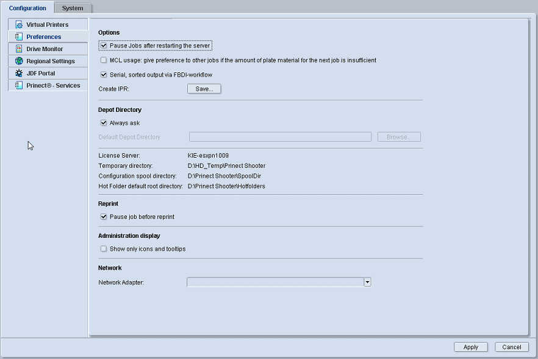
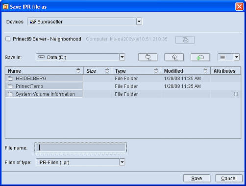
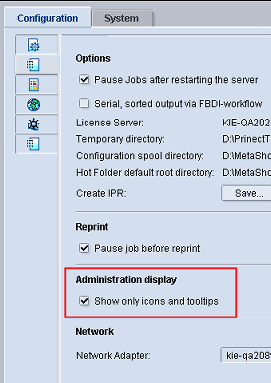

You can set or view the following parameters in "Preferences":
You will find the following parameters in "Options":
If this option is set, all jobs that are still to be processed are set to "paused" when you trigger a computer reboot. These options apply to all the virtual printers.
For the Prinect Shooter with Suprasetter MCL (MultiCassette Loader) a special mode for defining the processing oder has been introduced. In this mode, the plates loaded in the different trays of the MCL are used up as far as possible without an operator being on site. This mode is activated with the "MCL usage: give preference to other jobs if the amount of the plate material for the next job is insufficient" option. Herby the optimal utilization of the loaded plates can be achieved.
 Note: To use this function, at least the SCM version 2.30.001 must be installed.
Note: To use this function, at least the SCM version 2.30.001 must be installed.
In standard mode Option deactivated), the individual exposure jobs are simply processed sequentially and the imagesetter stops and requires additional plates if one of the trays is empty. By this means it may occur that jobs for other plates which are located later in the Shooter queue are also no more exposed, although enough plates are available in other trays of the MCL.
In the new mode, these jobs are preferred and therefore the loaded plates are exploited optimally. The jobs are exposed in the planned order as long as enough plates of the required type are available to expose the complete next job. If not enough plates are available for the next job, this job remains in the "waiting" state, and jobs requiring other plate types are preferred according to the planned order. The number of the plates available in the individual trays must be set up manually by the SCM operator, and it must be updated if plates are refuelled. The calculations for the automatic mode require a correct setting of the plate numbers in the trays.
FBDI jobs are output one after the other in their correct order if you check this option and if FBDI output is enabled in the Prinect MetaDimension Tiff-B Engine Manager.
Note: This option can only be used if Prinect Shooter operates with Prinect MetaDimension. The FBDI protocol is not available if Prinect Shooter operates with Prinect Integration Manager and the Prinect HighRes Renderer.
A processed job cannot be interrupted by other jobs, unless you assign "urgent" as a priority (see the Reorder with the "Urgent" Button). This means that the job is fully processed before another job can be output. This ensures that the plates of a job are output together in their correct order. For more details about a sorted output, see Sorted and Unsorted Output. By default, this option is disabled.
Note: This option is a principal workflow setting and should be set once directly after Prinect Shooter first starts.
When Tiff-B screening data are output with Prinect Shooter, it is generally necessary to customize certain parameters in the jobs (punch and material settings, etc.) to the properties of the output device connected to Prinect Shooter. There are different ways to create an IPR profile depending on the RIP and output device used:
The RIP settings have priority over the settings in Prinect Shooter if you define device-specific settings both in the RIP and in a Prinect Shooter virtual printer or in the Engine Manager. This only applies to settings that explicitly were assigned values.
Note: It is not absolutely necessary that the Prinect Shooter user interface is running on the Prinect Shooter PC to export an IPR device profile. You can also call up the Prinect Shooter browser user interface at the RIP computer, for example, and save the device profile file there. You can find more information about this in the Online Help of the browser user interface
1. Click "Create IPR > Save". The "Save IPR file as" dialog displays:

2. In "Save in", select the folder where you wish to save the profile file. You can also select a shared folder (e.g. on a Prinect server) in the network neighborhood. If necessary, you can create a new folder.
3. Give it a name and click "Save". You can find details about how to integrate the device profile file into the RIP workflow in the RIP software documentation.
Here you can define the depot directory where depot jobs are stored (see Storing Jobs). If the "Always ask" option is activated, every time a job is stored, a dialog is shown where you can determine the depot directory. If this option is deactivated, you can click the "Browse" button and select a folder in the file system which is used as the default depot directory.
"License Server" shows the computer name of the License Server that makes the licenses for Prinect Shooter available. Normally, the License Server is defined during installation of the Prinect Shooter software. If the License Server is to be located on a different computer or if the computer name of the License Server has changed, you can change the computer name of the License Server in the Windows Start menu with "Start > Programs > Prinect Shooter > Modify License Server". You should change the computer name before you disable the old License Server. After you modify the License Server, exit the Prinect Shooter services with "Service Control". Afterwards, make sure that the new License Server is running and can be reached in the network and that the required licenses are assigned to the Prinect Shooter computer (in the License Manager). After that, restart the Prinect Shooter services.
This section shows the paths of the temporary directory, the configuration spool directory and the hot folder root directory.
Prinect Shooter uses the temporary folder to buffer data that are created during job processing.
All the job data created temporarily during processing are buffered in the configuration spool directory. This buffer action is known as "spooling". The spool directory contains the data of all the jobs in the job list. This includes the data of completed jobs that are not yet removed from the job list. Because the Tiff-B files can be very large, the spool directory should be located on a drive of the Prinect Shooter PC that has enough available memory. You can check the available memory of each of the drives on the Prinect Shooter PC in the drive monitor (see the Drive Monitor).
This is the default directory for hot folders. This means that hot folders are created as subfolders of this root directory. By defining the hot folder default root directory, you set that this hot folder path will be used by default for the virtual printer when you create a new virtual printer. You can define a local directory or a shared directory in the network neighborhood as the hot folder default root directory. Because hot folders are used to transfer TIFF-B files, you must make sure that the drive on which the hot folders are located has enough available memory.
These directories are defined during installation of the Prinect Shooter software. If you have to change one of the directories while working with Prinect Shooter, for example, change it to a new drive you installed, you can set this new directory path in the Windows Start menu with "Start > Programs > Heidelberg Prinect Shooter > Modify Folder Selection".
This is where you define how the system reacts when jobs are to be reprinted.
If this option is set, all jobs that are still to be processed are set to "paused" when you trigger a reprint. These options apply to all the virtual printers.
Note: Note that this option influences the reprinting of single separations (see Reprinting Single Separations).
In this section, you set how text is displayed in "Administration".
The wording on the vertical tabs on the left in the "Administration" group of the Prinect Shooter Printmanager is hidden if you check this option and then click "Apply". The name of a tab displays as a tooltip when you leave the mouse pointer for a moment on that tab.

By hiding the names, you have more room for the parameters of the administration settings. The tab names display again when you uncheck this option and confirm it with "Apply".
If you have more than one network card in your Prinect Shooter PC (e.g. because the Prinect Shooter PC is integrated into more than one network neighborhood), you must select the network adapter that is connected to the network where you wish to share the virtual printers of this Prinect Shooter PC.
Copyright © 2013 Heidelberger Druckmaschinen AG